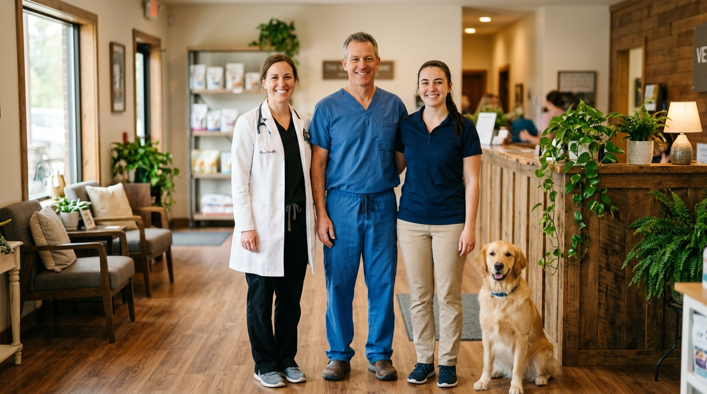
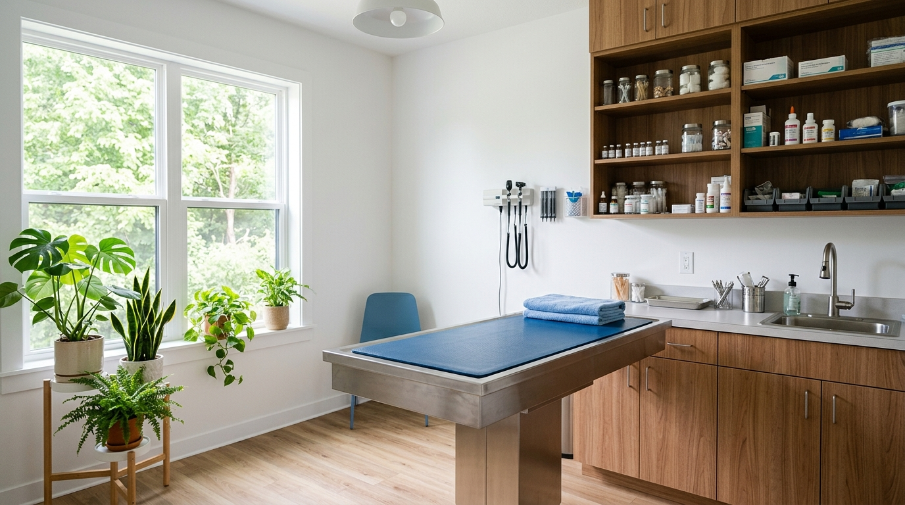

Quiénes somos
Diez años cuidando a las familias de San Cristóbal, una mascota a la vez
Fundada en 2014 por la Dra. Valentina Duque, Veterinaria El Roble nació con la misión de ofrecer atención veterinaria cercana y profesional. Desde entonces hemos crecido hasta convertirnos en un centro completo de salud animal, sin perder el trato cercano que nos caracteriza desde el primer día.
Nuestro equipo
Profesionales que aman lo que hacen

Dra. Valentina Duque
Directora médica · Medicina Interna
Dr. Samuel Rojas
Cirugía y Traumatología
Lcda. Genesis Molina
Asistente Veterinaria y Peluquería
Nuestros valores
Lo que nos mueve todos los días
Cercanía
Tratamos a cada mascota y a cada familia como parte de la nuestra.
Profesionalismo
Formación continua y los más altos estándares de medicina veterinaria.
Compromiso
Acompañamos a tu mascota en cada etapa de su vida, sin excepciones.
Nuestras instalaciones
Espacios pensados para el bienestar animal

Consultorios amplios, área de hospitalización y quirófano equipado.